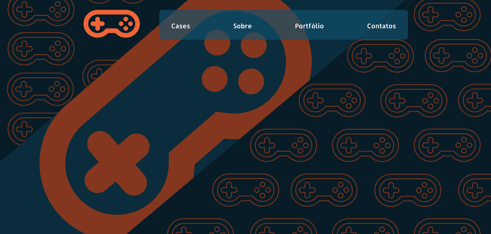
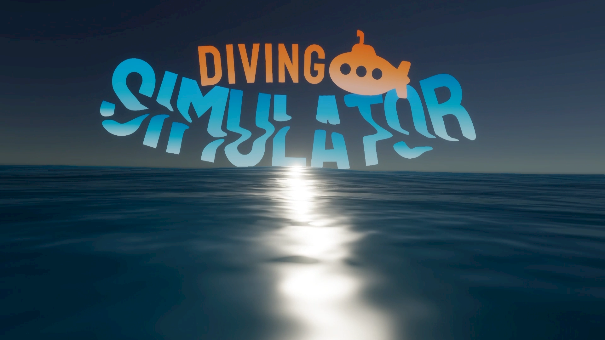
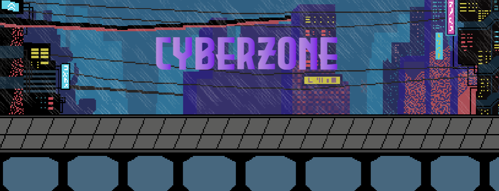
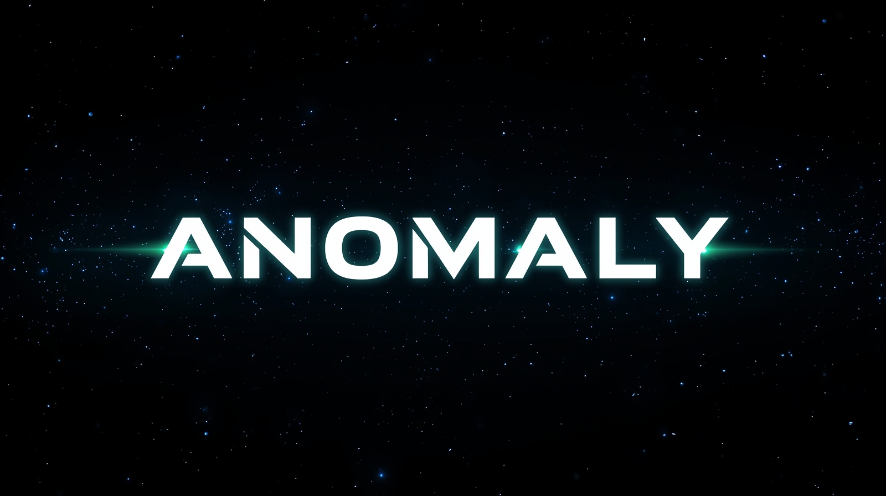
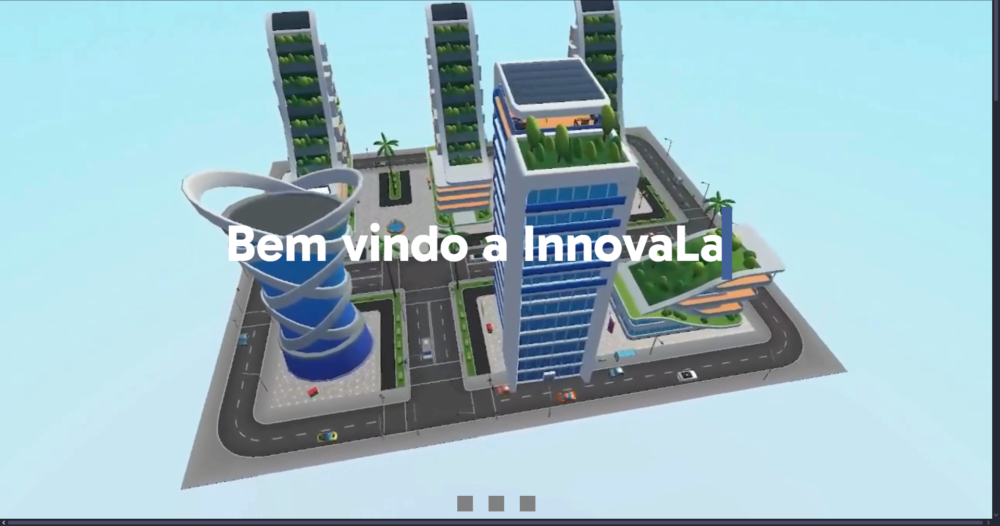

Bem-vindo
ao meu Portfolio!
Um pouco sobre mim
Me chamo Nicolas Martins, tenho 18 anos e sou apaixonado por tecnologia, criatividade e desenvolvimento de jogos. Sou Técnico em Desenvolvimento de Jogos Digitais no SENAI, onde tenho conhecimento prático em programação, game design e ferramentas de criação. Tenho familiaridade com a engine Unity, onde desenvolvo protótipos e projetos voltados para jogos 2D e 3D. No meu tempo livre, gosto de jogar, escutar música e explorar novas linguagens e ferramentas que possam expandir minhas habilidades como desenvolvedor.

Site desenvolvido como projeto para uma empresa fictícia de gamificação corporativa. Layout responsivo, com foco em acessibilidade e boa performance utilizando HTML, CSS e JavaScript.
🔗 Ver projeto
Jogo simulador de mergulho desenvolvido em Unity e C#, com suporte para VR. O jogador assume o papel de explorador subaquático em missões científicas investigando o fundo do mar.
🔗 Ver projeto
Projeto de jogo com temática cyberpunk desenvolvido durante o curso. Focado em mecânicas de combate e exploração em ambientes futuristas.
🔗 Ver projeto
Roguelike espacial de ação ambientado em uma galáxia distorcida. O jogador enfrenta desafios mutáveis atravessando setores instáveis com o objetivo de restaurar o equilíbrio cósmico.
🔗 Ver projeto
Plataforma gamificada desenvolvida em Unity que transforma treinamentos corporativos em experiências interativas. Aborda temas como LGPD, Melhoria Contínua e Lógica de Programação por meio de mecânicas de jogo, recompensas e feedback instantâneo, com foco em engajamento e retenção de conhecimento.
🔗 Ver projeto